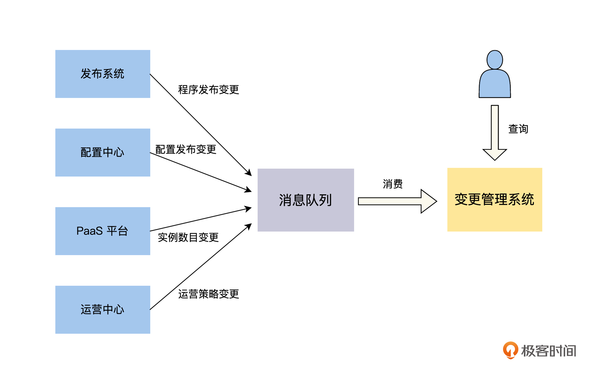
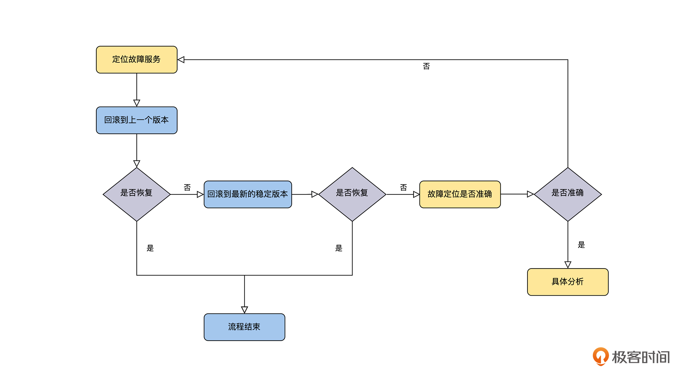

- 00 开篇词 掌握好学习路径，分布式系统原来如此简单.md.html
- 01 导读：以前因后果为脉络，串起网状知识体系.md.html
- 02 新的挑战：分布式系统是银弹吗？我看未必！.md.html
- 03 CAP 理论：分布式场景下我们真的只能三选二吗？.md.html
- 04 注册发现： AP 系统和 CP 系统哪个更合适？.md.html
- 05 负载均衡：从状态的角度重新思考负载均衡.md.html
- 06 配置中心：如何确保配置的强一致性呢？.md.html
- 07 分布式锁：所有的分布式锁都是错误的？.md.html
- 08 重试幂等：让程序 Exactly-once 很难吗？.md.html
- 09 雪崩（一）：熔断，让故障自适应地恢复.md.html
- 10 雪崩（二）：限流，抛弃超过设计容量的请求.md.html
- 11 雪崩（三）：降级，无奈的丢车保帅之举.md.html
- 12 雪崩（四）：扩容，没有用钱解决不了的问题.md.html
- 13 可观测性（一）：如何监控一个复杂的分布式系统？.md.html
- 14 可观测性（二）：如何设计一个高效的告警系统？.md.html
- 15 故障（一）：预案管理竟然能让被动故障自动恢复？.md.html
- 16 故障（二）：变更管理，解决主动故障的高效思维方式.md.html
- 17 分片（一）：如何选择最适合的水平分片方式？.md.html
- 18 分片（二）：垂直分片和混合分片的 trade-off.md.html
- 19 复制（一）：主从复制从副本的数据可以读吗？.md.html
- 20 复制（二）：多主复制的多主副本同时修改了怎么办？.md.html
- 21 复制（三）：最早的数据复制方式竟然是无主复制？.md.html
- 22 事务（一）：一致性，事务的集大成者.md.html
- 23 事务（二）：原子性，对应用层提供的完美抽象.md.html
- 24 事务（三）：隔离性，正确与性能之间权衡的艺术.md.html
- 25 事务（四）：持久性，吃一碗粉就付一碗粉的钱.md.html
- 26 一致性与共识（一）：数据一致性都有哪些级别？.md.html
- 27 一致性与共识（二）：它们是鸡生蛋还是蛋生鸡？.md.html
- 28 一致性与共识（三）：共识与事务之间道不明的关系.md.html
- 29 分布式计算技术的发展史：从单进程服务到 Service Mesh.md.html
- 30 分布式存储技术的发展史：从 ACID 到 NewSQL.md.html
- 春节加餐 技术债如房贷，是否借贷怎样取舍？.md.html
- 春节加餐 深入聊一聊计算机系统的时间.md.html
- 春节加餐 系统性思维，高效学习和工作的利器.md.html
- 结束语 在分布式技术的大潮流中自由冲浪吧！.md.html
- 捐赠
16 故障（二）：变更管理，解决主动故障的高效思维方式
你好，我是陈现麟。
通过上一节课的学习，你已经理解了系统故障的评估标准，并且明白了在 SLA 一定的情况下，平均故障恢复的时间越短，对用户体验的影响就越小，所以快速恢复故障是一个非常关键的目标。接着，我们采用分治法，将故障分为被动故障和主动故障，讨论了如何通过预案调度快速恢复被动故障的策略。
相信你已经对被动故障如何处理心中有数了，但是，我们对于故障恢复的处理还远远没有结束。根据极客时间以往的故障报告进行分析，我们会发现很多故障都是在系统迭代过程中，人为引入的主动故障，比如发布新版本服务引入的 Bug 和崩溃等。所以，在这节课中，我们就继续来学习，如何处理由于主动原因导致的系统故障。
主动故障的分析与思考
首先，我们一起来思考一下，主动故障是否也可以通过预案调度的形式来快速恢复呢？答案一定是不可以的。我们来回忆一下被动故障的特点，虽然出现被动故障的地方，不受我们的控制，但是它有相对标准的服务和方案，不会随着业务的迭代而快速变化，所以处理被动故障时，我们准备多预案的成本是可控的。
而主动故障是工程师们在业务迭代过程中，人为引入的故障，如配置错误、代码 Bug 等，它来自于我们的业务系统，我们不可能为了做预案，同时组织两个不同的研发团队，分别开发同一个业务系统，这个多预案的成本实在是太高了。
如果预案调度的形式不可用，那么我们应该如何快速恢复主动故障呢？
当我们去分析主动故障时，会发现每一次发生主动故障的原因都不太相同，比如需求理解错误、逻辑考虑不全面这些不可穷举的问题。但是我们可以通过分析问题的根源确认一点，主动故障主要是工程师们在业务迭代过程中引入的，也就说明如果业务系统没有发生迭代变化，就不会发生主动故障。
主动故障的来源与处理方法
通过对根本原因的分析，下面我们就可以从工程师的哪些行为，会导致系统发生变化的角度去思考了，这样问题就能很快收敛了。你可以想一想，在日常工作中，我们碰到的主动故障来源是什么，是否几乎包含在下面几类中。
- 程序发布变更：指服务器、App 和 Web 等发布了新版本的程序和服务。
- 实例数目变更：指服务器新增实例和下线实例。
- 配置发布变更：指发布了新版本的配置。
- 运营策略变更：指举办了导致用户流量增长的运营活动，比如购买了新的推广广告等。
虽然发生主动故障的具体原因各不相同，但是它的来源却只有这几个。所以对于这种情况，我认为快速恢复主动故障，可以从变更入手：出现主动故障的时候，如果我们没有足够的信息，去判断当前的故障出自什么原因，我们就应该第一时间定位故障可能存在的范围，比如某一个服务或者数据库，然后我们就去看这个服务或者数据库最近是否有相关的变更，依据变更信息来确定故障恢复方案。
但是，在突发线上故障这种高压力、争分夺秒的情况下，我们应该如何准确、快速获得主动故障相关的服务和数据库的最新变更呢？
如果只是在故障现场去询问工程师显然是不行的，可能会出现询问的人不全、回答的信息缺失或者不正确等问题，这会对故障的快速恢复造成非常严重的影响，甚至还可能出现更大的故障。这一类信息的收集、展示和查询需求是非常适合用管理系统来解决的，所以，一个自动化的变更管理系统是非常有必要的。
变更信息的管理
上文中的讨论，让我们明确了变更管理系统可以收集，整个分布式系统所有的变更信息，为工程师提供变更信息展示和查询服务。它的实现相对比较简单，我们只需要在发布系统、配置中心和运营中心等，可能导致系统变更的运营和运维系统中，将每一次变更的信息丢入消息队列，变更管理系统就会消费消息队列的信息，然后做好展示和查询。具体的架构设计图如下。

变更管理系统有两个值得我们关注的地方。首先，变更信息最少要包括 4 个“什么”的内容：什么人在什么时间和什么地点，做了什么事情。如果还需要其他的信息，可以自行增加。
其次，变更信息最少要包含，时间维度的视图和支持按服务或系统维度的查询。因为一般来说，故障能提供给我们最关键的信息就是这两个：发生故障的时间和位置，所以我们需要通过这两个信息来定位相关的变更信息。
稳定版本的概念
有了变更管理系统后，我们就能基于变更信息快速处理故障了吗？其实，还有一个问题会影响我们对故障的判断和处理效率。
例如，你负责的某一个服务，在今天白天的低峰期有 10 个变更，系统一直正常，但是到了晚上的高峰期突然出现了故障，这个时候，你应该如何定位，是哪一个或哪几个变更导致的故障呢？如果要通过回滚来恢复故障，那么你应该回滚到哪一个变更呢？
你可以按时间倒序一个一个变更回滚，然后观察系统是否正常，但是这样非常低效。首先，每一次回滚都需要重新发布，其次，有一些系统故障就算已经回滚到正常版本了，它的恢复也是需要一些时间的，并且我们不能确定这个时间的长短，一般无状态的服务恢复时间会很快，有状态的服务则慢得多。所以，在每一次回滚后，你都需要等待一段时间，来确定是否恢复到正常版本了，有时，甚至需要回滚很多个版本，才能让系统恢复到稳定版本。
那么你一定在想，有没有更高效的故障处理方式呢？
更高效的处理方式是有的，在我的实践经验中，一个比较好的方法就是引入稳定版本的概念，出现故障的时候，如果定位到了引起故障的服务，首先回滚到上一个版本，因为最后一次变更导致故障出现的概率是非常大的，如果系统还没有恢复，就可以直接回滚到这个服务的稳定版本了。
对于稳定版本的定义，我们可以先基于公司的业务流量情况，定义出公司业务的高峰时段，然后将经历整个完整高峰时段的变更，标记为稳定版本，这个功能可以设计为变更管理系统的一部分。
例如，公司的业务高峰期是 19 点 - 22 点，那么所有在 19 点前发布，并且持续到 22 点，依然在提供服务的变更就是稳定版本，变更管理系统通过分析每一个变更的上线时间和下线时间，自动标记变更是否为稳定版本。
这里要注意一个关键点，一定要关注新的变更是否持续了整个高峰期，否则很有可能会出现在高峰期的时候，故障被回滚的变更版本，依然标记为稳定版本的情况。例如，在一个业务高峰期为 19 点 - 22 点的系统中，如果有一个变更是 16 点发布的，到了 20 点出现了故障，因为这个变更版本没有持续运行到 22 点，没有经历一个完整的高峰期，那么它就不能被标记为稳定版本。
故障恢复流程
有了变更管理系统和稳定版本这两个工具，再结合可观测性的监控系统，整个故障恢复的流程就变得简单和高效了，如下图所示。

- 通过可观测性的信息快速确定导致故障的服务。
- 回滚到上一个版本，观察故障是否恢复，如果恢复，结束流程，否则执行 3。
- 回滚到最新的稳定版本，观察故障是否恢复，如果恢复，结束流程，否则执行 4。
- 确认之前故障定位的服务是否准确，如果不准确，重新定位，然后执行 2；如果准确，则需要考虑该服务是否被其他的因素影响了，比如网络、机器等，这个需要具体问题具体分析。
这里还要特别强调一点，一般来说，我们的服务和系统等变更都是要求可回滚的，即向前兼容。当然，我们也可以容忍回滚的时候，新功能失效，但是老功能和数据不能因为回滚出现问题，这样在发布出现故障的时候，我们才能够通过回滚快速恢复。
其中，有一些变更设计成可回滚的成本非常高，那么对于这一类变更，如果选择不向前兼容的设计，那么上线前就要经过更严格的评估和测试，确保不会出现问题。
总结
本节课，我们先讨论了通过预案调度来快速恢复主动故障的办法是不可行的，因为我们不能对同一个业务开发两套系统，它的研发和协调成本实在太高了。
然后，我们通过分析主动故障的来源，将主动故障分为四个原因：程序发布变更、实例数目变更、配置发布变更和运营策略变更，这样主动故障的问题就收敛了。
最后，我们一起探讨了如何设计一个变更管理系统，如何来定义一个变更的版本为稳定版本，并且分析了基于变更管理和稳定版本，如何快速恢复主动故障的流程。
到这里，“分布式计算篇”的学习就结束了，提前预告一下，下一周我为你准备了期中测试，你可以抓住时间，好好复习下学完的知识，预祝你取得一个好成绩。
思考题
日常工作中，你碰到过最严重的一次故障是什么原因导致的？当时你是通过什么办法修复故障的？后来又采取了哪些方法，来避免类似的故障再次发生呢？
欢迎你在留言区发表你的看法。如果这节课对你有帮助，也推荐你分享给更多的同事、朋友。
© 2019 - 2023 Liangliang Lee. Powered by gin and hexo-theme-book.